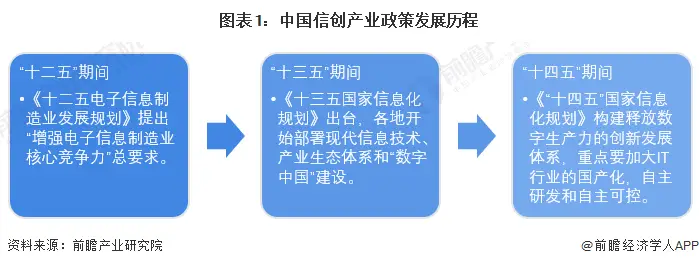
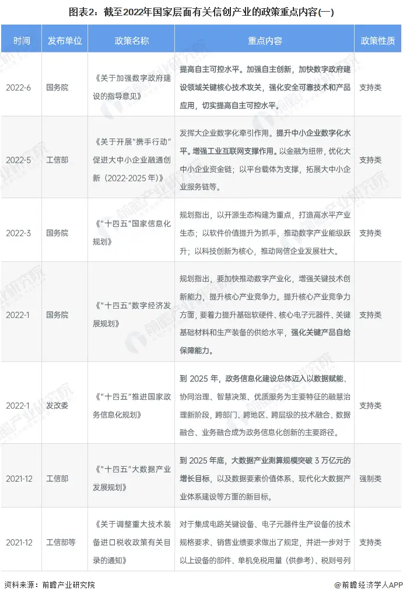
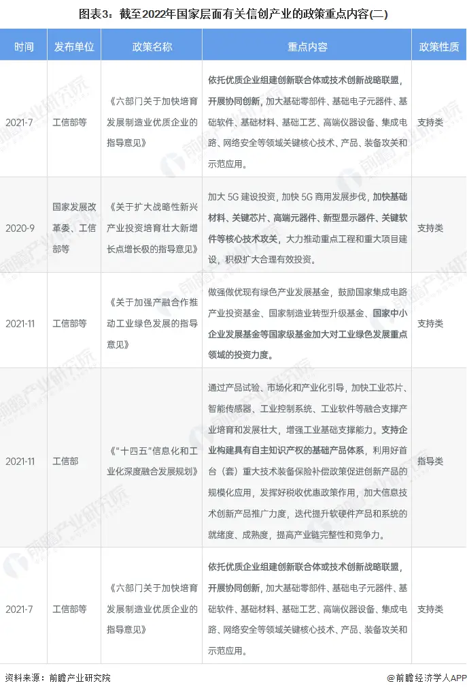
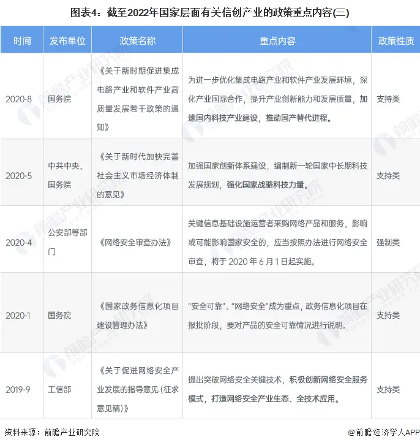
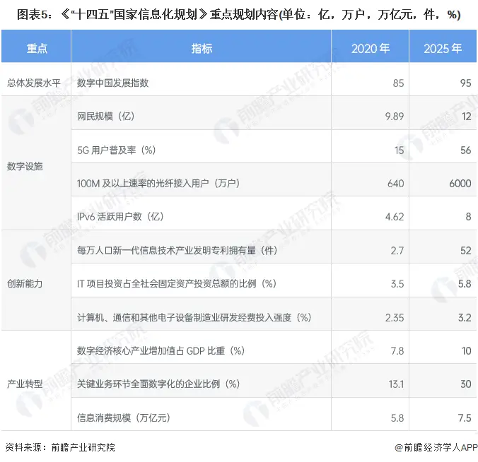
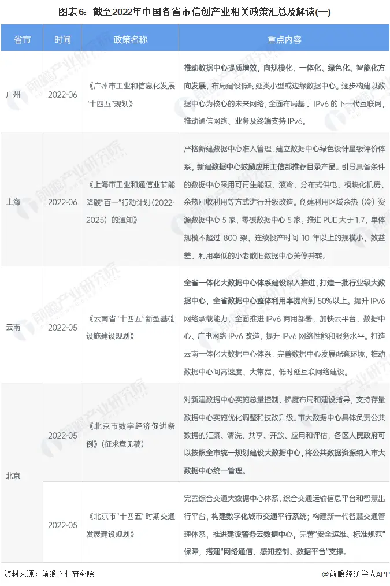
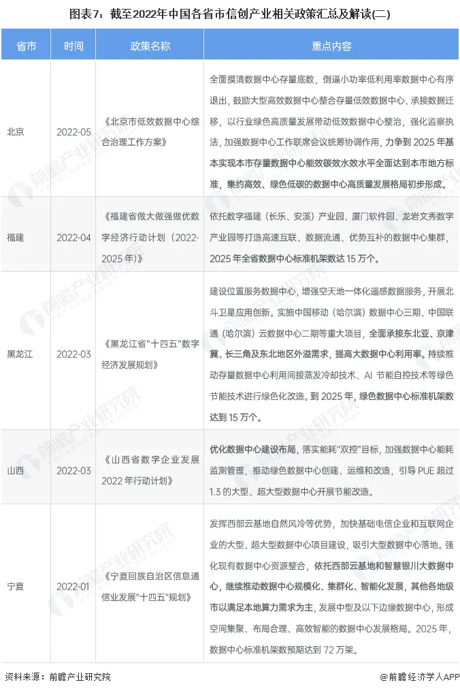
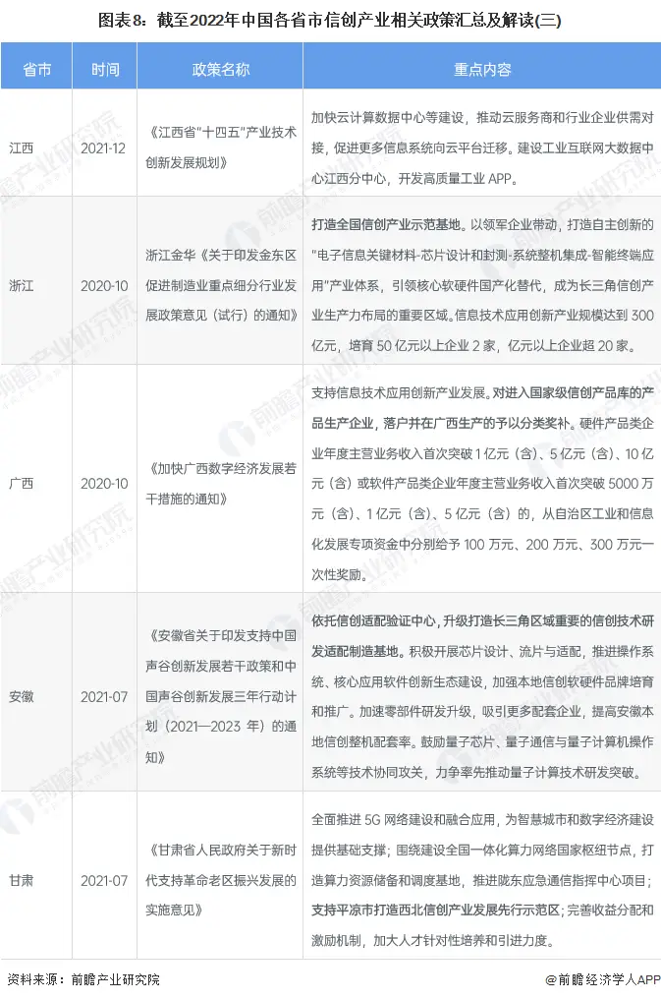
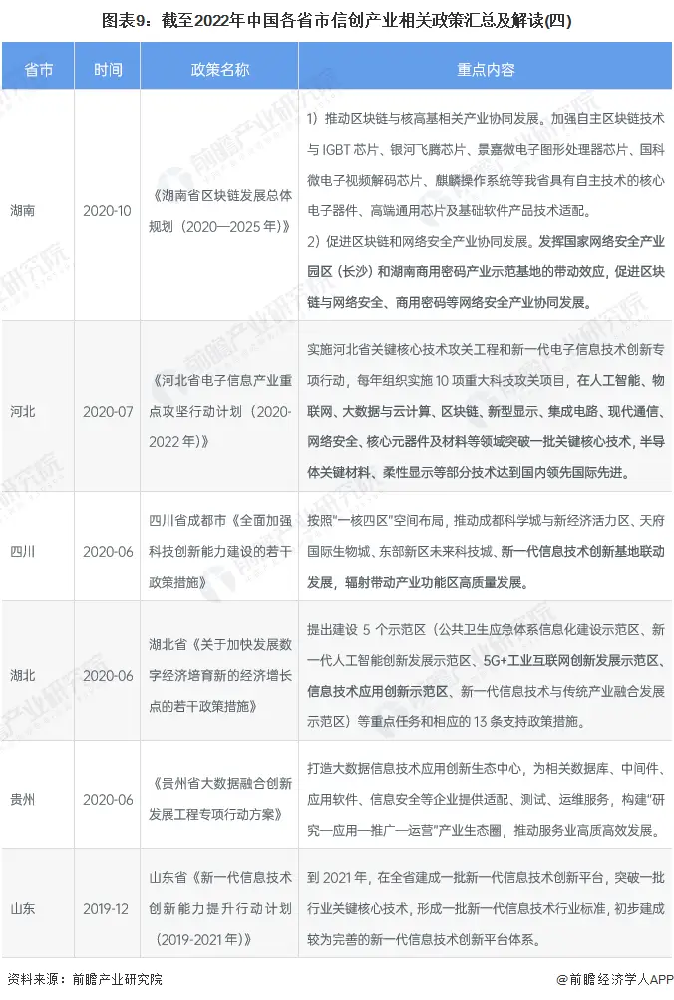
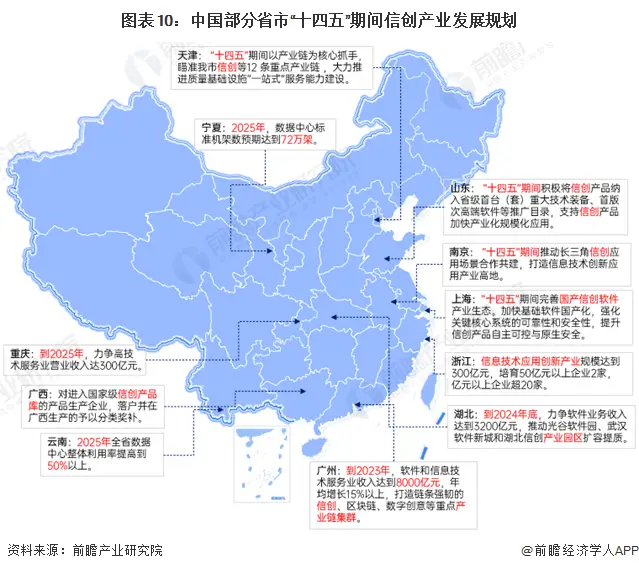

重磅！2022年中国信创产业政策汇总及解读（全）政策助推信创产业高质量发展
1、中国信创产业政策发展历程
我国政策上对信创产业的发展鼓励开始较晚，“十二五”提出增强电子信息技术产业的核心竞争力，但未提及信创;“十三五”各地开始部署现代信息技术、产业生态体系和“数字中国”建设。“十四五”开始重点关注信创产业的国产化程度，实现自主研发和自主可控，构建打破以美国为首封锁的自主创新技术体系。

2、国家层面政策汇总及解读
——国家层面信创产业政策汇总
信创产业作为战略性新兴产业，国家不断出台相关政策对行业的发展进行支持。政策扶持对于信创产业发展推进的意义重大，我国信创产业竞争力不断突破，国产化进程稳步推进。2019年我国提出发展信创产业，随后出台了一系列支持政策，2020年作为信创发展元年，国家一连颁布五项政策对信创产业发展规划提出相关规定。2022年开始政策重点提及“数字经济”、“数字政府”和国家信息化。国家层面涉及信创产业的相关政策与内容如下：



——国家层面信创产业发展规划
《“十四五”国家信息化规划》中做出了指标要求，总体发展水平要求数字中国发展指数从2020年的85提升到2025年的95;数字设施、创新能力、产业转型中跟信创产业相关的指标有每万人口新一代信息技术产业发明专利拥有量、IT项目投资占全社会固定资产投资总额的比例、计算机、通信和其他电子设备制造业研发经费投入强度、信息消费规模等。

3、各省市层面的政策汇总及解读
——31省市城市信创产业政策汇总
在地方产业政策的推动下，各地的集成电路、云计算、应用软件、信息安全等领域有望大面积使用国产品牌。国产品牌技术的升级也有利于促进我国信创产业的健康持续发展。




——31省市城市信创产业发展规划
从各省市的信创产业发展规划来看，大部分省份对信创整体产业没有指标性的要求，天津、山东、南京、上海、广西要求“十四五”期间积极打造信创产品、信创软件产业生态等目标。湖北制定了推动信创产业园区的扩容提质;广州要求软件信息技术服务业收入达8000亿元;浙江要求信息技术创新产业(59.890, -1.11, -1.82%)规模达300亿元;重庆力争2025年高技术服务业收入达300亿元;而宁夏、云南等地制定了2025年数据中心利用率或机架数的指标。
